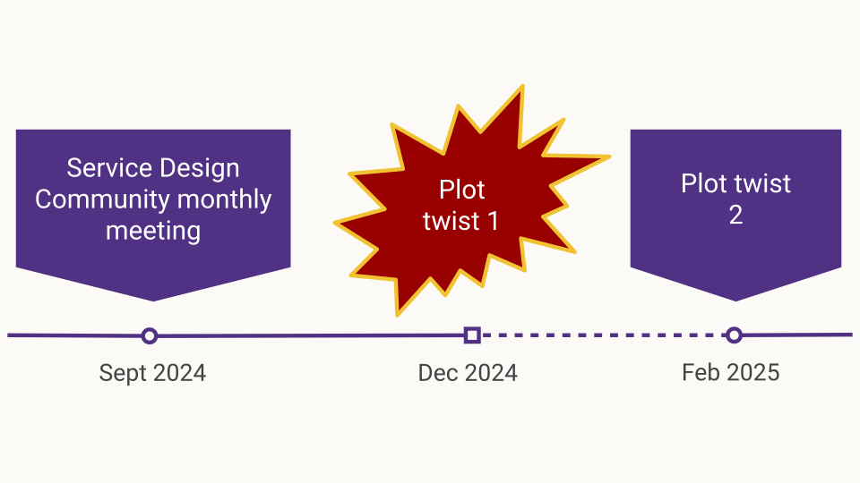

How a service designer can contribute to accessibility
This page is an alternative format for the slides, which includes my speaker notes.
But if you prefer, you can access the Google slides or you can download a PowerPoint file (8.3MB) - which should be accessible.
You can also download maps I've recreated as examples for this talk:
- PDF of an ecosystem map example (30KB)
- Text alternative for this ecosystem as a PowerPoint file (250KB)
- PDF of a service map example (180KB)
- Text alternative for this service map as a PowerPoint file (200KB)
What this talk is about:
In this talk, I present:
- how the guidance for the service designer role was created for the DWP accessibility manual
- how you can make your end-to-end service accessible across multiple channels
- design communications and give some practical ways to ensure your mappings and your communications are accessible
- how to run accessible sessions while designing with your team, stakeholders and other participants
The session format is 50 mins talk and 10min for questions.
Participant takeaways:
- a better understanding of what is expected of a service designer working in government to make their service accessible
- how to ensure that the way they work, communicate and design with others is also accessible so they include and engage with all the stakeholders
- improve their practice and the way they create and communicate their mappings and other outputs
About me
Learning about accessibility

Speaker notes:
To tell you the story about how we came up with a new guidance for the service designer role in the accessibility manual, I need to tell you a bit more about me.
In 2016, I was a graduate developer for MoJ - I was learning about accessibility from the GOV.UK service manual, from senior colleagues, and it was about how to code so that the interface would be accessible for people using it. I learned to test my code and to use screen readers and screen magnifiers to check the result.
In 2018, I switched to UX design - so being accessible was more about the design, using the right components, colours, using the design system correctly, but I also did some research, for this, it was about recruiting people who were disabled, planning more time for them and ensuring that my consent form enabled them to really understand what they were consenting to. I was lucky at the time as it was easy to recruit because I had access to a person who could help me and very well connected in the community.
In 2019, I finally became a Service designer! I was still often the one person going on and on about accessibility, and I started public speaking about accessibility.
Each role in a multi-disciplinary team has a part to play to avoid making a service inaccessible
Speaker notes:
Because of my experience going from one role to another, I was very aware that each role in a multi-disciplinary team has a different part to play to avoid making a service inaccessible.
It works better if everyone knows their part, so that the accessibility of a service do not rely on one single very keen individual reminding everyone what they should be doing.
This is why guidance per role feels really important to me.
Story time: DWP Accessibility Manual
May 2021
- Business analyst
- Content Designer
- Delivery Manager
- Digital Performance Analyst
- Interaction Designer
- Product manager
- QA tester
- Software Engineer or Frontend Dev
- User Researcher
GOV.UK Blog post announcing the launch of the manual.
Speaker notes:
When the manual was first created in 2021, it was unique. Nothing like that existed in government even though it was badly needed.
Now there is also the DfE accessibility and inclusion manual but in terms of guidance per role, they do not have much yet.
The manual was very useful and very well received at the time. My favourite part was the guidance per role, so I started pointing people to it during my presentations, at work, or outside work.
You could find the guidance for the roles on the slide but there was no guidance for the service designer role.
There was also nothing for the Accessibility specialist role but it’s been added since.
You can access the manual in the state it was at the time via this link, using the wayback machine.
Joining DWP in 2023
When I joined DWP in 2023 as a contractor, I talked to Tom Napier, he is a senior accessibility specialist.
I contacted him about the project I was on, but in the conversation, I mentioned the manual and it turned out he was the one in charge of maintaining it.
I told him how I kept directing people to it even before I joined DWP, but then the service designer role was missing from the list.
There were 2 reasons, not enough time just now, but also he was unsure about what a service designer does and how this contributes to accessibility.
So I don’t know about the other service designers in the room, but every time I join a project team, no one seems to be too sure about what a service designer do …. apart from creating maps maybe?
I keep having to explain what I do.
Tom was happy to work on a guidance with me.
The service designer role
I started looking at:
- point 5 of the service standard which describes what is needed to make sure everyone can use the service, which includes disabled people
- the guidance of the Department for Education’s guidance on how to apply the service standard for point 5 as they go in a bit more details
- I’ve checked the description of the service designer within the Government Digital and Data Profession Capability Framework
- finally I’ve added elements from my own practice as a service designer
So that’s all the material I had to start working on a guidance.
Involving the Service Design Community


Speaker notes:
So that was my initial plan, but I wanted to involve the wider service design community in DWP too, because I’m just one service designer, and there are different ways to practice service design.
We worked on this with the DWP Service design community September 2024.
So enters Lindsay Stephens, who organises the Service Design community events in DWP along with Shalom. There was nothing planned for the next one, so I suggested presenting what I had done to give some context, and then we could work on this as a community. We had invited Tom to the session so he could hear first hand what we felt our role was regarding accessibility.
Plot twist 1 - contractor’s life, my contract was terminated earlier than planned in December.
Plot twist 2 - I got a new contract in DWP in February 2025.
I contacted Tom again, asking if he add worked on the guidance, and he had a really good draft already - I gave him feedback, but again I felt I needed to involve the Service Design community again, and we had a Community day coming up in March.
So again we worked on this in groups to refine the guidance and it got much better as a result.
We had a few questions as well, for example, we needed resources for physical accessibility, because as service designer we look at all the channels, not just the digital ones and wanted to make sure we had pointers in the guidance to help with making physical events accessible.
Tom added some good sources on this and shortly after the guidance was published.
Takeaways from that story
- never too old to change career
- you can contribute to the community of practice as a contractor
- involve contractors in your community of practice
- keep pushing
- involve other practitioners
By myself I can do a lot, and can control the timeline better, but by involving the service design community, it took this guidance much further, and made it better in the end.
April 2025
Since April 2025, the service designer role has its guidance page. Which makes me really happy. I’m going to tell you a bit more about the guidance itself now that you now how it came to be created. It covers:
- WCAG Conformance
- Non-digital accessibility
- Design communication
- Design together
- When you can’t make a part of your service accessible
I’m going to go in a bit more details about each of them during the rest of the talk.

Guidance for the Service Designer role.
What’s different in this role?
- “Your overview of the end-to-end service may give you an insight into inclusivity for both external and internal users”
- “You’ll design journeys across both digital and offline channels”
- Non digital accessibility: Accessible events toolkit from Scope
Speaker notes:
Others on your team might not have this insight, so you should be an advocate in your team for all your user, both internal and external.
Parts of your service, as well as some of your design activities, might occur offline, or non-digitally. You must consider non digital accessibility too.
Disability charity Scope has lots of guidance around accessibility in the built environment. Scope provides guidance for users on how to check the accessibility of an event or venue.
This can be useful to understand what things you should consider when parts of your service require people to attend a place in person.
When you can’t make part of your service accessible
- a service, technically accessible online might not be the best solution
- you can and should ask for help from accessibility specialists
Speaker notes:
There are 2 meanings to this: you are in a situation where an alternative option is a better than spending a lot of time on making a digital solution more accessible.
For example, consider the digital self-check-in at Jobcentres. It might be difficult to change accessibility settings if you need to use a screen reader and cannot hear in the busy environment. Speaking to a person could provide a better experience.
Bringing the community along with me to improve the guidance highlights that some service designer might not know how to make things accessible by themselves. We are not trained to do this, so if no one in your team can help, you need to work with accessibility specialists (in your department, cross government, but you could also bring in associations).
Accessibility
1 in 4 people are disabled in the UK
A disability can affect your vision, your hearing or your speech.
It can be a physical disability or a cognitive disability, this means it affects your memory, or how you process things, communicate and think.
It can also be a mix of more than one disability.
In fact,it’s quite frequent that people have more than one disability and they are not always visible to others.
It’s different for everyone.
Source for 1 in 4: disability prevalence by age group - GOV.UK
Defining accessibility
“Accessibility means that people can do what they need to do in a similar amount of time and effort as someone that does not have a disability.
It means that people are empowered, can be independent, and will not be frustrated by something that is poorly designed or implemented.”
Source: GOV.UK Blog post
Web Content Accessibility Guidelines (WCAG)
This is the standard you need to comply with for digital accessibility.
Currently, version 2.2
Web Content Accessibility Guidelines (WCAG)
Published by the World Wide Web Consortium (W3C)
We have a link to this in the guidance, but it’s not always easy to engage with - DWP accessibility manual have some more engaging guidance around this.
Neurodiversity
I’m going to tell you a bit more about neurodiversity as well. It can be considered as a subset of accessibility. When we talk about cognitive disabilities, it’s often related to neurodiversity.
An umbrella term
Neurodiversity is an umbrella term which cover conditions like:
- Dyslexia
- Autism
- ADHD (= Attention Deficit and Hyperactivity Disorder)
- Dyspraxia
- Dyscalculia
- OCD (Obsessive Compulsive Disorder)
- and more
There is a lot of overlap between these conditions.
How it affects people
- think, process information and language
- interact socially and communicate with others
- perceive space and time
1 in 7 people are neurodivergent in the UK
This is about 15 to 20% of the general population.
But it’s often underestimated and under-declared.
It’s much higher for people working in Tech.
→ above 20% and probably up to 50% in tech and the creative industry.
Speaker notes:
It’s often underestimated and under declared because even though things are improving, it’s still often perceived negatively, so people are wary of disclosing.
Many people don’t have a diagnosis, it takes a lot of time to get one, and some people are not even aware that they are neurodivergent, especially women, as the description of these conditions are still full of stereotypes and more representative of young boys than girls and even less of adult women who often have learned to cope and mask.
It looks like these numbers are much higher for people working in tech.
It’s very hard to have reliable numbers, I’ve got 3 sources:
- Major new report from the Tech Talent Charter reveals tech employers massively underestimate neurodivergence - We are Tech women (Feb 2024)
- What it’s like being neurodivergent in the creative industries - Creative review (Avril 2024)
- Written evidence given to a UK Parliament committee (PDF)
If you consider the people in your team, it’s very likely that quite a few are neurodivergent.
I’ll come back to this at the end when talking about designing with your team and communicating your design.
Cognitive Accessibility Guidelines (COGA)
This is a set of guidelines for inclusive design, also published by the W3C. It covers a lot of issues around neurodiversity and was included in the guidance for our role as it’s very useful
The Department for Education has a really engaging version of COGA
The Department for Education has a really engaging version of COGA

Speaker notes:
The COGA principles:
- Help users understand what things are and how to use them
- Help users find what they need
- Use clear and understandable content
- Help users avoid mistakes and know how to correct them
- Help users focus
- Ensure processes do not rely on memory
- Provide help and support
- Support adaptation and personalisation
- Test with real users!
Accessibility vs Inclusion

To finish covering the bases, I want to talk about the scope of the guidance. It is for accessibility, which includes neurodiversity.
But many neurodivergent people do not consider themselves disabled, so I chose to represent it as different shape on this slide but still overlapping with accessibility.
As a service designer, we should be aiming for inclusion which is wider than just accessibility.
Point 5 of the service standard mentions disabled people but also digital capability, as we need to include people who do not have access to internet or who might lack the skills or the confidence to use online services.
For me, inclusion is even wider than accessibility and digital inclusion: it’s about respecting the identity and circumstances of each person using your service.
The guidance for the service designer role is mentioning inclusion a few times, but its focus is mostly on Accessibility.
Designing for everyone
General recommendations
- think of accessibility right from the start
- involve disabled people at every stage of your research
remember: 1 in 4 people is disabled - don’t forget internal users
- everyone in your team needs needs to be involved
- ask for feedback (accessible and not only online)
Speaker notes:
You need to think about accessibility right from the start, not at the very end as it will influence your decisions all along.
Don’t forget internal users, they could also have accessibility issues while delivering the service, so do think about them too.
Make sure everyone in your team understand how to avoid making things inaccessible without meaning to.
Make it easy for people to tell you when something is not right.
Even if you have done a really good work, you are likely to overlook some issues, so this feedback is crucial to keep improving your service.
If your feedback mechanism is only online and not accessible, you are going to miss out on a lot of inclusion issues…
So make sure the way you request feedback is accessible and not only online.
Numbers
Low numeracy affects half the working-age adults in the UK
Accessible numbers project by Laura Parker
![Do…
round numbers up to the nearest whole number.
Do leave space around numbers.
Do fill in the information you already have.
Do use sentences to add context about numbers.
Do let people include spaces when entering numbers.
Do user research with people who struggle with numbers.
Do not…
use decimals unless it's money.
Do not overwhelm people with too much content.
Do not expect users to repeat or remember numbers.
Do not use tables or grids without explaining what the numbers mean.
Do not rush users to enter numbers accurately.
Do not force people to enter a number or do a sum to verify themselves.](assets/images/Accessibility-and-beyond/do-dont-low-numeracy.png)
Speaker notes:
Don’t forget about users with dyscalculia and low numeracy.
Low numeracy affects half the working-age adults in the UK - this is a lot of people among your users but it could also be your colleagues, in your team or among people delivering the service.
To learn more about this, you can check the Accessible numbers project by Laura Parker,there is advice and podcast episodes to understand how to do better. I really recommend it.
A while ago now, Laura worked with Rachel Malic and Jane McFadyen to create a new do and don’t poster for designing for people with dyscalculia or low numeracy: link to a blogpost explaining how they made this poster.
The Accessible numbers project has advice and podcast episodes for you to learn more about the problems and how to do better.
End-to-end, back-to-front
- Integration with other services
- Asking Questions
- Consistency
- Service features guidance in the manual: Redundant entry and Accessible authentication success criteria
Speaker notes:
In the guidance for a service designer, we have mentioned WCAG which is very wide, but for this role, we wanted to focus on a few points, which relates to the fact that we are the one person looking at the end-to-end and back-to-front service.
Integration with other services:
You should consider the accessibility of any other services you want to integrate with before deciding to include them in your design. These other services may have an impact on the accessibility of your design. For example, your service may pass the user to an authentication service before returning them to the main journey.
Asking Questions:
Many services ask questions for users to answer. You should ensure that you don’t ask the user the same thing over and over.
This can be harder than it sounds.Repeated questions can be difficult to avoid when designing a complex service with many integrations.
Consistency:
The way you navigate the service and ask for help should be consistent across integrations if possible. As well as testing features of the service, you should be testing whole journeys.
The DWP Accessibility manual has a Service features guidance part.
Service Designers should pay particular attention to it.
These pages provide more detailed information on the WCAG success criteria to should consider.
In particular: Redundant Entry and Accessible Authentication success criteria.
Design communication
Other skills needed by designers in government are around design communication. It’s about creating accessible outputs, and communicating your design decisions with the rest of your team, but also with your stakeholders.
Some basic steps
This is really for everyone in the team really not just service designers
- Use legible fonts, and structure your text with the right headings
- check colour contrast especially for your text
- do not rely on colour alone to convey meaning
- use plain language and explain acronyms
- be careful with numbers
- use accessibility checkers for your slides
- send your presentation ahead of the meeting when possible
Maps
- colour contrast are still important, and not just for the text
- legible font is still important, but more flexibility on the size
- beware: people will look for meaning in colours and alignment
- not too much info, not too many colours and shapes
- who is your audience? what’s your intent?
- create alternative formats
Speaker notes:
This one is more specific to service designer, because people do not always know what a service designer does, but we are usually known as the person ‘who does the maps’. And these can be powerful tools to communicate your design.
Think of who is your audience? What do you want to show with your map? This can help you reduce the amount of information on it. If you have different audiences and intents,you might need different mappings of the same thing. It’s more work but you are more likely to reach your communication goal that way.
In any case, you need to create alternative formats to the visual for people who cannot see, but also for people who do not process visuals well.
Example: Mapping an ecosystem
Speaker notes:
I cannot share actual maps of my work, but I’ve recreatedthem so you can get an idea of how I do this.
On this slide, I have a colourful ecosystem map.
At the top, I usually put a version number for that map, and in the top right corner, I usually explain what an ecosystem is and what we will use this for.
I also add the date when it was last updated.
The map itself show the usual elements I have in an ecosystem:
The primary group of users, and other groups …. potential support around the group, and charities and other 3rd parties. I will have some arrows to show the relationships between these groups.
I often have a part showing the teams, the systems and actors who are delivering the service internally, and relations they might have with other government departments. Here I’ve put the policy team and relation to piece of legislation the service needs to comply with.
And finally in this example, I’ve put a Local Authority part and within it departments with potential actors and what they do.
Once the mapping is in a good place, and I want to start sharing wider, I create an alternative format as a slide deck, and provide the same level of information but easier to use and engage for people who do not function visually or feel it’s too much to take in one go.
Turning the ecosystem visual into a deck
To turn that ecosystem visual into a slide deck, I start with the name of the service or project and give the version number and the last time it was updated on the first slide.

Then I have an ‘educational slide’ where I explain what an ecosystem is. It’s the same as what I had on the visual at the top right. So for example for an ecosystem, I would say:
“This is mapping actors like people, teams, organisations, but also systems, documents and 3rd parties, or anyone else that might be part of the service or affected by the service and the type of interactions/relationships between them at a high level.”

I explain how to read this map if people are interested in looking at it and I provide a link to the PDF version of the map.

I give a small version of the visual. It’s usually not something that can be used as such but it’s reassurance that you are looking at the right document and it might tempt the reader to check the visual if they haven’t already.

And this is where the written description part will start.

I start with the users. In a deck I can provide a bit more information and add links. I describe the relationships which are sometimes less obvious in a deck. It might have a bit of duplication compared to a visual as I might have to repeat some of the relationship on various slides.


I usually treat charities and third parties separately, in a dedicated section and again I can explain their role and provide links to information about them.


I have another part to explain the internal aspects of the delivery of the service, and some areas which were a shape on the visual. I might have a few slides here depending on the complexity and number of teams involved in delivering the service.


I often have one about the policy and legal aspects, and links to related legislation when relevant

I have a part on the system and tools, where I explain who uses them.

And finally I invite for feedback so I can improve when things were missing, incorrect or confusing.

Speaker notes:
I get more feedback that way, especially from people in operations teams, who are usually not familiar with design and maps like that. With this format, they sometime get back to me saying things like:
“It’s quite complete, I’ve never seen the service like that.“
It’s nice when it happens.
Download the text alternative for this ecosystem as a PowerPoint file (250KB)
Another example: A service map
I’m going to give you another example, with a different type of map. This time it’s a service map. Again, I’ve recreated one.
Speaker notes:
Again, I cannot share an actual map, but I’ve recreated one. This time it’s a service map.
I have a version number, and in the top right corner, I explain what a service map is and what we will use this for, I provide a key for the colours and shapes I’m using and I also add the date when it was last updated, and also say if it’s has been checked by stakeholders or not.
The map itself show the usual elements I have in a service map:
The column are each stage of the service, some are linear, here I’ve put awareness, apply, and another stage - And then more stages which might happen or not in any order.
For the rows, I have a first row that describe each stage at a high level, then a row for the external users and sub rows if there are different types, then one for internal users, again I might have different layers for different type of internal actors. I often have an extra row for third parties delivering the service too.
Under this, I have a row for the touchpoints, channels and systems involved at a high level and finally, a row where I add a bit of data when I have it about this specific stage. Across all this, I have boxes explaining tasks, events and arrows connecting them to understand the flow of the steps.
Once the mapping is in a good place, and I want to start sharing wider, I create an alternative format as a slide deck - But this time, I slice the mapping differently.
Turning the service map visual into a deck
I have a similar first slide.

Then a similar ‘educational slide’ where I explain what a service map is.

Again I explain how to read this map
I give a small version of the map

And this is where the written description part will start.
I start with the linear parts of the service.

For each stage, I will have a slide - some time more than one - where I provide a description of the sequence of tasks and events by different actors, I’ll add any data I might have about this step. For example the percentage of users failing to provide the evidence we need, I have a part of the slide where I give a high level description of the stage, and another to mention the touchpoints, the channels and systems involved.
I do that for each stage

Once I’ve described all the stages in the linear part of the service, I have a section for extra stages which might happen or not: it could be about making an appeal to a decision or transferring to another service. Then again I have a slide per stage with the description, data, touchpoints etc…

And finally like for the other map, I always have a slide inviting for feedback and giving a contact to do so.
Speaker notes:
Download the text alternative for this service map as a PowerPoint file (200KB)
Pros and cons of alternative formats
- time consuming
- need to maintain two formats
But:
- more feedback and engagement from people who are not designers
- improve my mapping
- this is accessible for people who are colour blind, visually impaired and for some neurodivergent type
Speaker notes:
Not everyone understand visual representations, so text alternative can help.
It improves my mapping as sometimes, while doing the deck I realise that something is not quite right in the visual representation or it makes me realise that actually, there is a relation or a step I do not understand well enough to explain it in a sentence so it needs more work.
Designing together
In this last part before the recap, I’m focussing on another set of designer skills: Designing together.
This is about designing with your team, your stakeholders, but also with external and internal users and third parties. So here I’m mostly thinking about workshops, but it could be show and tell sessions, research or co-design as well.
Unless you have an amazing research culture in your organisation. you won’t be researching with disabled people that often.
I think that the best way to have inclusion and accessibility in mind for your users is to start to really change the way you work with your own team and your stakeholders, as you work with them every day.
But there are no disabled people in my team
→ many disabilities are not visible
Neurodivergence in tech / creative industry: over 20% - probably up to 50%
→ people sometimes don’t declare their disability
Speaker notes:
You might be thinking, what is she on about? there are no disabled people in my team or among my stakeholders. And maybe you’re right.
But the problem is that people often think of disability as something that is visible and permanent. But many disabilities are not visible: like hearing and sight impairments, chronic pain and many more.
Do you remember the statistic for neurodiversity? about 1 in 7 people in the general population but in tech and creative industries, it might be up to 50%
This is not visible. You might not know about it, but you surely should think about it.
Another thing to keep in mind is that people sometime don’t declare their disability to their employer/colleagues
There might be a lot of reasons, I can give you some of mines:
- before getting a role, I’m never completely sure people won’t hold this against me despite saying they don’t discriminate
- once I have the role, I usually don’t talk about it because people might then treat me differently, or give me unwanted advice, or won’t believe me
- I don’t want to be seen differently or have this used against me
I can do this because I don’t really need accommodations if I can work mostly from home. These days I’m more open about it because I’m more experienced.
Things can change
- actual employees can become disabled
- a new joiner might be disabled
→ Make sure your systems, processes and practice are accessible for all
Creating a safe space
Do not force people to disclose a disability or medical condition
→ offer help for everyone
Instead of providing accommodations for disabled people
→ offer various options to all
Invite for feedback and allow people to reach out privately
Speaker notes:
So when you are designing with people, it’s important to create a safe space. Don’t force people to disclose a disability or medical condition. Instead, offer help for everyone.
We talk about ‘accommodations’ for disabled people, but it’s better to offer various options to all instead, so it doesn’t sound like you are making a big effort just for them and that way, it will benefit more people who might not have requested anything even though they might need it.
Invite for feedback, and allow people to reach out privately.
Don’t assume you know what is best
People don’t have the same needs even if they have the same condition, and needs vary in different contexts.
- always best to ask what would help
- have that discussion with the person
- do not assume you’re doing the right thing
Manual of me
- help you tell others what you need
- learn about what other people in your team needs
Do not make people share more than they are willing to
| Examples of sections |
|---|
|
Speaker notes:
A ‘manual of me’ can be a great tool to communicate what you need to work well with the rest of your team. I’ve been doing this in project teams for a while and found that it helps me to tell people what I need and also to understand them better.
In there for example, I will explain that I struggle with numbers, names and acronyms if I do not have a visual support for them and you just say them, because I’m French and my brain does the little gymnastic of translating things so it slows me down, but if I have a visual, I instantly recognise it.
Organising - hosting a meeting / workshop
- before the meeting: set expectations, provide an agenda, do it again at the start of the actual session
- invite people to tell you if this might not work for them
- if using online tools like Mural or Miro, plan for an alternative
- if over an hour → plan for a break and stick to it
- repeat the question someone asked before answering unless you’re sure everyone has heard/seen it
Presenting during a meeting
- share your slides at the start of a presentation or in your invite
- keep content short and simple, test the accessibility of the deck
- use a mic, speak facing your audience, camera on if online
- leave some space at the bottom of your slides
- describe any image/ diagram, assume at least one person cannot see
- don’t assume people can read the text on slides
Getting people in a physical venue
- access to toilets
- enough space to move around
- can the light be controlled
- sitting arrangement - standing
- provide photos or video of the space, and how to get there
- plan more time!
Speaker notes:
Earlier, I provided guidance from Scope about physical accessibility at a venue and they have an accessible events toolkit
Key takeaways
Designing for everyone
- think about accessibility right from the start
- do not forget about internal users
- consider neurodivergence and low numeracy in particular
- ask for feedback
- focus on: integration with other services, questions, consistency
Design communications
- provide alternative formats for your visuals and maps
- check colour contrast especially for your text
- do not rely on colour alone to convey meaning
- use plain language and explain acronyms
- be careful with numbers
- use accessibility checkers for your slides and word documents
- send your presentation ahead of the meeting
Designing together
- do not assume there are no disabled people in your team
- consider neurodivergence
- do not assume you know what is best
- use manuals of me
More resources
About accessibility and neurodiversity
- Past videos (of the Accessibility Scotland conference)
- Inclusive Design 24 online and free and in particular this video: How to be inclusive to neurodivergent people - Rachel Morgan-Trimmer
- Public neurodiversity support center
- Estimate how many people using your website might be disabled
Guidance
- DWP Accessibility manual
- Accessibility and inclusive design manual from the Department for Education
- Scope: checking the accessibility of an event or venue and accessible events toolkit
- Accessible numbers project
Some of my blog posts
- Different levels of inclusion awareness
- Inclusion in the workplace
- Avoiding misconceptions on your accessibility learning journey
- Removing barriers to inclusion
- Advice for speakers (to present in an accessible way)
- Is my website accessible?
Thank you!
To Craig Abbott, Tom Napier, Alice Forward, Lindsay Stephens, Shalom Jesusanmi, Helen Spires, and the whole DWP Service Design Community.
Speaker notes:
For this talk, I have a few people I would like to thank by name.
First Craig Abbott who started the Accessibility manual, I’d like to thank him for sharing so much of his knowledge over the years, I’ve learned a lot from him.
Thanks to Tom who has been great to work with and to get this long over-due guidance published.
I’d like to thanks Alice who was the head of service design practice at the time for all her support during our time in common at DWP.
And also Lindsay, Shalom and Helen, 3 lead service designers who have been super supportive too and the whole DWP service design community for working with me on this guidance.